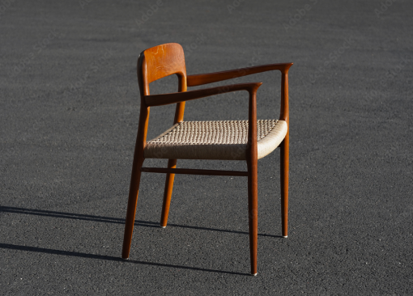

DANISH FALL COLLECTION
DESIGNER: HENRIK JESPERSEN
I forbindelse med foråret har en af vores designerer lade sig inspirerer af farverne og universet. Hans materialer består kun af 100% organisk materiale og den kraftige mørke farven. ser du noget som du synes ser fedt ud kan du altid tilgøje det til din ønske liste! God fornøjelse